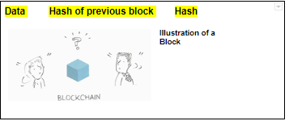
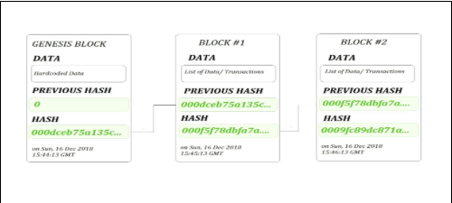
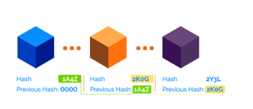
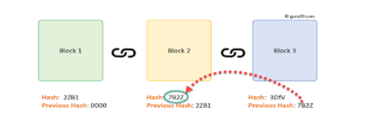
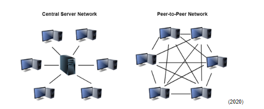
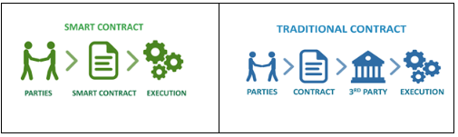

Our Team
-

Omer Yahalom
My name is Omer Yahalom, 22 years old from Israel. I currently study at RMIT University through OUA and my student number is s3858332. Currently, I live in Israel as it is my hometown but I used to live in several places like Germany and Poland. I speak English and Hebrew and I am an aspiring Polish learner. Today I am working as a freelancer for a cybersecurity company called Tufin as a front-end developer. I used to work in several companies until I decided I want to become a freelancer because of the freedom and interesting people you meet along the way. I usually like to build websites, web applications, and mobile applications. I am in love with cooking, watching documentary movies, and taking photos in my free time when I am not coding. The name we choose for the team is The Notorious Geeks.
-
Ali Hammoud
My name is Ali Hammoud, 28 years old from Sydney, Australia. My student number is s3798721. I am currently working as a sales professional in the IT industry, but my road to get there was not quite direct. I had an interest in computers from a young age, and I was always the go-to IT person in our circle of family and friends. I studied a few semesters of Architecture and Computer Science, before leaving uni to work as a Jr .NET Developer. I worked in development for a few years before transitioning into an IT focussed sales position. I now have returned to my studies several years later with a renewed motivation to complete my degree here at RMIT. I am hoping to develop both personally and professionally, and it all starts here in the Introduction to IT subject, as part of The Notorious Geeks.
-

Troy "legendary" Glossop
My name is Troy Glossop, I am 45 years old and live in Perth, Western Australia. I currently study full time at RMIT via OUA and my student number is s3572875. I have a background in I.T. and have worked in the industry since 1998, where my first role was as a technician building PCs for a large Computer store. In 1999, the store I worked at launched its own ISP, and as I had extensive experience with Unix and Linux, I became a System Administrator. This is the role I usually worked in until 2014 where I had to leave the industry due to health reasons. I am very interested in many facets of I.T, many of my hobbies are impossible without knowledge of Computers. My hobbies include playing music with my friends, building FPV Drones, playing Fighting Games competitively, Sim Racing and adoring my 20-year-old cat “Little Cat”. Our team name is “the Notorious Geeks”.
-

Mohamed Abdirashid Ali
My name is Mohamed Abdirashid, I am of Somali descent and was born in Nairobi, Kenya. In 1998 my family and I migrated to Adelaide, South Australia where I lived for several years, before relocating to Melbourne where my mom opened up a successful furniture store. I come from a big family of seven siblings; four brothers and three sisters, and I’m a proud uncle to three girls and one boy. In the family household I speak either English or Somali. I am an enthusiastic foodie and enjoy traveling, exercise and experiencing different cuisines as hobbies. In 2020 I began my studies as an OUA student through RMIT studying both Introduction to Information Technology and Introduction to Programming, my student number being s3450966. I am new to the IT industry, however from a young age, I have always had a keen interest in Technology and Computers. In particular through my career as a Security Supervisor I have developed the keen interest of protecting, preventing and monitoring systems in the physical world. I plan on integrating these skills into the cyber world as a Cyber Security Analyst in the near future. Since starting my studies in March, I have learnt many aspects of IT such as Cloud computing, self-driving cars, ethics and laws within the industry, E-wallets and much more. Now as a member of the Notorious Geeks, I am very excited to interact with like-minded individuals and look forward to learning and exploring more topics and techniques in the IT industry through our group assignment.

Team Profile
Mohamed Abdirashid Ali: Myers-Briggs test result is ENFJ. Online Learning Style test result is Tactical Learner. ‘Arguing Style Test’ Result Is Positive Fighting Tactics 76/100.
Omer Yahalom: Myers-Briggs test result is INFJ. Online Learning Style test result is Auditory/Visual learner.‘Big Five Personality’ result is Extraversion.
Ali Hammoud: Myers-Briggs: INFP-T Mediator Learning Style: Verbal Gallup CliftonStrengths: 1. Restorative 2. Connectedness 3. Ideation 4. Adaptability 5. Input
Troy Glossop: Myers-Briggs: INTJ Learning Style: Auditory Psychometric Test: 7/10
Group Process
In assignment 3 there was a change in the tool utilised for collaboration as zoom had limited meeting time, there was a shift to teams in assignment 3. In assignment 2 and in accordance to the Myers-Briggs test, our group displayed a balanced dynamic that brought different qualities to the team that benefited everyone. Ali’s personality type (Mediator) allowed him to be inspired by ideas rather than logic and analytics, and it often allowed him to be a bridge between different ideas and perspectives. Omer (Advocate) complements Ali’s personality type quite well in that he has large ambitions and ideas and is also led by morality. He can also see the practical steps to get there. He is inspired by morality and idealism and can easily get to the heart of an issue. Troy (Architect) has a profession for analytics that can be used to gather data and ensure the rest of the group has all the information needed to make decisions. Architects are great at design and implementing effective plans. Mohamed (Protagonist) brings everything together by being a natural-born leader and can bring out the best in everyone and make sure they have what they need. Each of us has different learning styles, which means we can bounce ideas off of each other and make sure none of us gets left behind. Information can be displayed in different ways and from different perspectives, and this is an extremely healthy way to learn. These qualities manifested within the team during assignment 2. In contrast every individual within the group has weaknesses according to Myers Brigg personality test and although such weaknesses were not manifested throughout assignment 2 these weaknesses can develop into conflict situations. As underlined in the table below here are the groups weaknesses based on the Myers Brigg personality test.
| Tool Name | Description |
|---|---|
| Ali (Mediator) (Strengths & Weaknesses | Mediator (INFP) Personality | 16Personalities, 2020) Figure 1 |
Weaknesses
|
| Omer(Advocate) (Strengths & Weaknesses | Advocate (INFJ) Personality | 16Personalities, 2020) Figure 2 |
Weaknesses
Sensitive
|
| Troy (Architect) (Strengths & Weaknesses | Architect (INTJ) Personality | 16Personalities, 2020) Figure 3 |
Weaknesses
|
| Mohamed (Protagonist) (Strengths & Weaknesses | Protagonist (ENFJ) Personality | 16Personalities, 2020) Figure 4 |
Weaknesses
|
Career Plans
Our group all have very different ideal jobs and goals. They vary both in their scope and in their technical focus. Ali’s role, product manager, focuses more on the management of teams and the direction of products. Technical understanding is important, but communication skills are more important for this particular role. Omer’s role as a senior front-end engineer is in very high demand and is a classic skillset in the development world. It is an essential role in bringing many only platforms to life. Troy’s ideal role as a firmware/hardware engineer ventures into the role of actual hardware, which introduces a new dynamic and requires a completely different skillset. Finally, Mohamed’s role as a security analyst requires a keen and devious mind, as well as the technical skills to back it up to defend systems against potential adversaries.
Tools
The Notorious Geeks Github Repository:
| Tool | Function |
|---|---|
| Microsoft Teams | Video and Voice chat meetings |
| Google Docs | Shared Document Collaboration |
| Instant Messaging/Quick Status updates |
Project Description
Aims
We aim to provide accessibility and growth development in order to help people to find nearest toilets and companies to sell their products in a refreshing way. On the other hand, our goal is to reach millions of people and companies by bringing easy to use applications that are understandable and user-friendly. Eventually we want to revolutionize the usage of toilets and the way companies sell their products.
Plans and Progress:
Flusha is one of a kind application in terms of accessibility and affiliate-marketing. Our application is a mobile app that gives information of nearby free to use toilets based on smart algorithms and community support.
Planning - Since our application is based on accessibility and affiliate-marketing we ought to look at two parameters, how to make our app more informative and easy-use and how to connect smart sales with toilets. We brainstormed about what we should offer to the users and we decided to go to an existing market that has a lot of competition but still wanted to innovate and enhance the way we see and use toilets.
Wireframing - The next thing we have done is to plan the back bones of our application.Wireframing was crucial yet tough to perform and to understand because we needed something that eventually will be usable, simple, beautiful and understandable.First we draw on a piece of paper what is going to be the structure of the application, the main pages included pages like login page, home page, search and recommendations. We planned the positions of each button and image till the small detail as much as we could.We used several types of wireframing softwares like Figma, Wireframe.co and Photoshop but at the end we decided to go with PhotoshopCS6 and IllustratorCS6. The process of converting a drawing to Photoshop was quite hard, nor difficult because everything had to be precise with our idea. We were trying to be collaborative and efficient as much as we can and after several attempts of designing the mockup the outcome was productive, we came with a first translation of our idea and then we all really understood how we were going to develop our application.
Development - The development stage has not been made yet due to limited time scopes but we are planning to execute a solid development approach within the 2nd year of this program. To simplify the application, we would use a major and enhanced development framework, React Native which enables us to create cross-platform development without handling difficult technical issues like platform development, user experience and relevance. React Native gives us the possibility to create a functional product using built-in tools, community support, enriching courses and easy path to learn and it focuses on the frontend side of the application. For the backend we would use NodeJS which also gives us full support from the learning path, understandable documentation and community support. NodeJS and React Native make it possible, by creating user-friendly interfaces, connectivity to the backend side and building unique APIs for further app growth.
Development Cycle - We envision a 3 tier Development cycle, namely “Dev”, “Staging” and “Live”. The “Dev” or “Development” cycle and platform is the first stage. It is in heavy construction and not ready for any external functionality. You can think of it as a “pre-Alpha” state. The “Staging” cycle can be considered analogous to late Alpha, transitioning to Beta. Late in this cycle the product should be considered ready for testing but not ready for any external customers. This is where you have the important functionality completed but expect issues to arise. After refining and testing the product it should be ready to go live. “Live” is the product as it is intended to be released to the public. After passing through Dev and Staging cycles, it is expected to be a complete and customer ready product. Utilising the existing IP address filtering functionality in CentOS we can control connections to the live Node.JS instance via an IP pool. This allows us to control exactly who can connect to the instance while it is in Development and Staging, therefore utilizing AWS as a development environment. The benefits of utilising AWS as a development platform are Twofold. AWS is accessible globally, so if we have robust security measures in place, the development environment can be accessed by our team anywhere. This is especially desirable in 2020 as many people are working from home. We do not have to maintain multiple servers for Development, Staging and Live. The product can be developed on the same server and iterated through Development, Staging and Live cycles without the need to migrate to any other servers. This saves unforeseen configuration issues which can arise from mismatched versions, network configuration and hardware mismatches, and this saves time (which is an expense). Once this instance is available, and basic backend functionality is completed, the Front-end Developer, iOS Developer and Android Developer can start on their respective customer interfaces. The Web front end development will take place on the CentOS instance, while the iOS and Android development cycles will take place on the respective workstations of these Developers. Utilising the built-in emulation facilities in Eclipse and XCode, the iOS and Android Developers will be able to iterate from Development to Staging cycles before trialling on the end point hardware (Android and iOS based handsets respectively).
Enhancing User Experience and Accessibility - As we defined in our aims and goals of this project, user experience and accessibility is one of our foundations for this product. In order to understand consumers and companies we would need to understand better how they use it in real time and get insight on what can we do better within the usage of the app. We will present the idea and vision of our company and how we can solve a better toilet finding yet enhance sales conversions within the same use. We would present the designed app and ask if they can understand how it might work and eventually do our homework based on relevant feedback. In addition, after we got the information we need to approach a better user experience and we will use softwares like Axure and Adobe XD in order to insure we will have not only a design to show our clients but a proof of concept (POC) and how everything should work after the development stage. We will implement animations, enhanced typography and colors for accessibility and easy to use user experience paths so that people can understand how to use the app within the first time they download it.
Behind the idea of Flusha - As young entrepreneurs, we want to change the world, innovate and solve problems that we think can enhance humanity. Everything began right after Ali, Omer, Troy and Mohammed discussed a project for the second assignment we were assigned. It took us weeks to come up with a revolutionizing idea that can potentially help hundreds of millions of consumers. At first, we thought the idea was silly and unhelpful. Although it was silly, we continued with that train of thought and came to realise we may be onto something that is genuinely helpful. We feel we differentiate ourselves from similar applications due to the decisions we have made in the aspects of engineering, design and business development. We progressed with our idea and currently we are working on the UI/UX which might take us a couple of months to finalize before we get feedback from other designers and UX consultants. Afterwards we plan to develop an MVP in order to reach out investors and expand our idea further.
Roles: We have decided on 4 roles at this present time. Due to the small team size, we hope to attract candidates with strong experience in the industry and multiple skills that align with the project. Backend Developer The Backend Developer will ideally have Sys Admin and/or Full Stack Development experience, and a skillset that will enable them to configure the AWS server instance and the infrastructure therein, such as Node.JS and MySQL. This is a specific role because the skillset required to complete these task are very specific and while the other Frontend Developer The Frontend Developer will have a strong background in Node.JS and Javascript, and be able to develop a responsive and professional Web front end to the Flusha platform. Android Developer The Android Developer will be experienced in the industry, and have experience working on projects from conception all the way to post release support. iOS Developer The iOS Developer (similar to the Android developer) will be well versed in developing iOS applications to a high standard from conception to post release support.
Roles:| User Application | Host Application | Host Web Portal |
|---|---|---|
| Create an account with email, Gmail, Facebook, or mobile number. | Register as an owner of an establishment/lavatory. | Register as an owner. |
| View local lavatories as tags/pins on a map display allowing pinch zoom and radius search. | Update lavatory as “recently cleaned/last cleaned at” | More complete and robust lavatory/establishment management features |
| Information display when tapping on a tag: Name, rating, rate, favourite, contact host, offers, mother friendly, accessibility features, opening hours, etc. | Offer and manage promotions which can be redeemed through the user application. | Create and manage promotional offers. |
| Keyword search for particular establishments and ability to view as a list or map display. | Manage lavatory details to ensure information is accurate. | - |
| Tags glow when there are marketing offers available. | - | - |
| Click on offers in order to view and redeem. | - | - |
| Navigation to lavatory through Google Maps | - | - |
Tools and Technologies:
Backend Developer Tools:| Product Name | Version req. | License Type | Notes |
|---|---|---|---|
| Ubuntu workstation | 18.04 LTS | GPL / Open Source | Package managed Distribution |
| Vim (IDE) | 7.4 | GPL / Open Source | Included in modern distributions. |
| SSH Client | 7.6 | GPL / Open Source | Available via Apt |
| Chrome | 78 Stable | Freeware | Available via Apt |
| RDP (Remmina) | 1.2 | Copylefted Libre | Available via Apt |
| Thunderbird (Email) | 60 stable | MPL 2.0 | Available via Apt |
The hardware requirements for the Web Developer/ Front End Developer are rather moderate, however, a modern workstation is recommended to run resource intensive applications such as Adobe Photoshop and Illustrator. Web Developers will often need to install multiple versions of browsers to see how the “pages are rendered” on different platforms.
Reflections:
What the Data tells me is that this role contains very desirable skills, some of which are rated in the top 20, and all in the Top 100. While there was no listing for AutoCAD specifically, Computer Aided Design does encapsulate this skill. Many of the generic skills listed are in the top 20, such as Multitasking and Communication skills, (rank 20 and 1 respectively) which I also expected. I did suspect the lack of Electronics and Hardware skills are reflected in the fact that this role is Hardware and Software based in an industry where the majority of roles are Software based. My opinion has not changed, this role appeals to me greatly because of its diversity. Having worked in IT for almost 20 years, initially as a Technician, and then working my way up to a Linux/Unix System Administrator, what I enjoyed about my role is the multiple roles I would have to fill. I enjoy learning new skills and working on multiple types of tasks greatly. Having worked in IT, I knew SQL would be very high on the list of desirable skills, being quite well versed in administration of SQL server instances. I am however extremely surprised Visual Basic is still in the Top 100 of desired skills, as this has been superseded by VB.NET. I assume this is due to legacy systems, and from personal experience Firmware is not often written in the “newest and greatest” language of the day. For example ADA, which is a programming language first developed in the late 1970’s is still used in the Military for mission critical devices. After I complete my current studies (Bachelor of Information Technology at RMIT) if my health permits, I would really like to proceed with a Bachelor of Mechatronics. Securing a role such as this, or starting my own similar project, would be the end goal of those studies.
| IT Skills | Rank | Job Listings | Generic Skills | Rank | Job Listings |
|---|---|---|---|---|---|
| JavaScript | 2 | 2,946 | Communication Skills | 1 | 44,367 |
| SQL | 1 | 3,570 | Problem Solving | 2 | 16,445 |
| Linux | 13 | 1,632 | Organisational Skills | 3 | 15,590 |
| Graphic Design | 10 | 2,068 | Team Collaboration | 5 | 14,364 |
| Software Engineering | 15 | 1,372 | Planning | 7 | 11,315 |
| Building Relationships | 8 | 2,119 | Troubleshooting | 6 | 11,471 |
| Technical Support | 11 | 1,830 | Detail-Oriented | 8 | 8,298 |
| Scrum | 23 | 1,043 | Leadership | 11 | 5,144 |
| Git | 21 | 1,230 | QA and Control | 13 | 4,444 |
Reflection:
As we can see, frontend development requires in-depth and wide-ranging knowledge with languages, tools, and abilities like JavaScript, HTML & CSS, Git, and SQL, Linux, Project Management, Sofware Engineering, Scrum, Git, and building relationships in order to maintain a solid communicative and successful tech environment. In addition to that, the role also requires abilities like problem-solving, higher communications standards, detail-orientation, quick troubleshooting, and efficient collaboration which can indicate a high demand role and a vast range of skills that are crucial in the IT industry. In my opinion, this role is the best role anyone could get and my opinion has not changed. Having a mixture of skills set in such a fast and dynamic environment that changes all the time is definitely not boring and personally excites me.
| IT Skill | Rank | Job Listings | Generic Skills | Rank | Job Listings |
|---|---|---|---|---|---|
| Python | 22 | 1,150 | Problem Solving Skills | 2 | 16,445 |
| Linux | 13 | 1,632 | Analytical | 17 | 2,997 |
| Project management | 5 | 2,252 | Communication | 1 | 2,640 |
| Microsoft Windows | 4 | 2,860 | Creativity | 9 | 7,475 |
| Java | 3 | 2,699 | Detail-Oriented | 8 | 8,298 |
Reflection:
The ideal job for me would be working as a security analyst for Hays. The skills required by a security analyst are mainly strong communication skills for purposes of interacting with non-technical and technical investors, risk management and assurance, systems design, standard security operating procedures and auditing. The ability to decipher various cloud platforms such as Azure, Google, AWS etc and understanding the standard framework of security guidelines like ISO 27001, PSPF, ISM, VPDS. It is also essential to have within this role a general technical security operations experience and certifications in one or more CompTIA Security +, CISM, CEH, CISSP or ISO27001. I hope to achieve these skills by first getting the appropriate education needed through RMIT university and then joining an internship program for real life experience. I believe practice makes perfect and that is what I intend to do in order to achieve the end goal. (skills and careers, 2020). The common element found within this sector of IT and other sectors such as front-end development and IT management is the use of soft skills such as strong communication skills between stakeholders, an ability to use logic and reason, strong attention to details, organisational skills. The hard skills that are also elements which are common is knowledge of hardware systems. The main difference between my particular field of choice and others in the group is the responsibilities involved for example as a security analyst it is imperative to know the strengths and weaknesses of IT systems and have a methodical approach to difficult circumstances that deal with safety problems. It is also imperative to understand how hackers work and keep up with the industry in terms of criminal cyber-underworld. The responsibility of a security analyst deals with aspects relating to security and seeks out weaknesses in IT infrastructures.
Group Skills:
The three highest-ranked IT-specific skills which are not in our required skill set.
| IT Skills | Rank | Job Listings |
|---|---|---|
| SAP | 6 | 2,189 |
| Business Management | 7 | 2,141 |
| Microsoft C# | 12 | 1,643 |
The three highest-ranked general skills which are not in your required skill set.
| Generic Skills | Rank | Job Listings |
|---|---|---|
| Writing | 4 | 15,590 |
| Mentoring | 13 | 4,538 |
| Presentation Skills | 15 | 3,716 |
IT Work
I’m a technical product manager, often called a “mini-ceo”. Our job is to bridge the business and the technology side. Making sure we provide the necessary tech and function in a digital product for serving the needs of the customers and the business. A digital product can be anything from an online service, a mobile app, a smartwatch, etc. I work mostly on online services and specifically on our online portal for our internal employees, and a few other internal tools that we have."
“We are in the recruiting industry which is in general quite big - it’s a multibillion dollar industry with various consulting firms, job boards, data tools, etc. Specifically, our company is focussed on remote working and remote freelancing which is a small part of the industry right now but it is growing really fast. It is regarded to be the future of recruiting and working in general.”
“My role is about doing a lot of different things but I would not say there is something specific that takes most of my time every day, depending on the state of your business, product or startup it could vary on but we usually like to spend most of our time in research about how to build a product road map and the features that an engineering team will be working on in the next few months, that basically involves a lot of calls with customers and business stakeholders and other types of research sending out surveys or trying out different UIs or mockups to see if we can improve business rates and business value. It is mostly about research and experimenting and validating what kind of features you would like to add to your roadmap”.
“I work with many departments, nearly all of them at some point. I work a lot with the engineers, web, and mobile for how we should build a specific feature for our platform. I also work with designers about how the feature should look like, I often work with data scientists whenever there are some algorithms to serve the functionality of the platform. I work with the operational teams to make sure that our internal team is trained for the new features and they also provide the feedback we need for improving and saving a product strategy. I also work with sales and marketing for specific campaigns we might want to launch and other departments like the support department for support purposes..”
“I work a lot with the Engineering department, so Web Developers and Mobile Developers. On a day to day basis we use Scrum as a methodology to Sync products, and we have Scrum Ceremonies for all our meetings and other processes. This is all to make sure the way the functionality is built serves the business and the customer. Once we ship it, we also take the feedback and iterate on this, our functionality, making improvements, wherever necessary.”
“We interact with clients in a few ways. We often do client interviews, so as part of our research about how to formulate a product strategy, and what kind of features we should be adding into the platform. So, we also conduct some interviews. We schedule some meetings with some of our clients, to discuss with them about certain things, learn more about how they use the product, what are their different challenges, and validate some of the hypotheses we have. We take this feedback directly from the clients and build it into our product strategy.. and also our plan of improving the platform in general.” “Another way (we interact with the client) is we have some online portals. Some of the time, where we gather ideas for new features and improvements from our customers. So that’s also how you could interact with a client.. if it’s a matter of asking some clarifying questions about ideas they have provided on this idea.”
“That applies basically to all clients in general, customers in general, no matter what kind of industry you are in, or what kind of product. The methodology is the same, but you need to... based on the product that you have, the industry that you’re in, and all these things… You need to find the right segment of customers that you’re interested in. So maybe, you’re not interested in your whole user base… and you need to break it down into different user personas, or different user segments, and target the segment that is more interesting for the problem you are trying to solve, or the feature you want to build, and the product area you are focused on as a Product Manager.”
“I would say it is about doing a lot of different things. I would not say something specific that takes most of your time every day is very different and depending on the state of your business, the state of your product, the strategy that you have on your product or company it could vary where you spend most of your time. Usually, we like to spend most of our time in research. Research about how to build the product through a map and the features that engineering would be working on in the next few months that basically involves a lot of calls with customers and calls with business stakeholders. It involves other types of research like sending out surveys, trying out some different UIs or mock-ups to see whether they can improve conversion rates or provide another business value and things like that. It is mostly about research and experimenting in order to figure out and validate what kind of features you want to add to your map”
"I would describe this most challenging trying to combine all the information that you have gathered from different sources and make it a cohesive strategy, to choose what kind of problems are the most important to solve for the business and the customers. To prioritise them based on impact and when you do that formulate it into a strategy with some basic pillars that all these problems fall under."
“I believe that the essence of the IT industry is innovation combining this with technology. I believe that It is important to have business technology and innovation in your core not just the kind of things you must do on the side but basically treat this as a core aspect of your business. It is something that can drive your business forward and make it successful. I would say that an example of work could be to leverage technology to solve a problem that is hard to crack otherwise for example what we do is that we are taking a traditional problem. The problem of matching business projects with the right people and instead of doing this completely traditionally with relying on only human intelligence we basically add technology in the mix to help do it in a more optimised way. Another example could be food delivery for example this basically is like a traditional service that many restaurants are doing in a traditional fashion but if you add technology in the mix then you can optimise your operations which could lead to happier customers like faster deliveries, more reliable deliveries and basically make your business standout compared to competition”
IT Technologies
Machine Learning
Machine learning is an area of artificial intelligence. It specifically deals with how programs can learn and make decisions [1]. Generally, a machine learning algorithm has two main components. This consists of the learning algorithm and the data set which the algorithm will use to “train”. This is often called training data. The algorithm analyses the training data and forms a model with which it will then use to make intelligent decisions or predictions. There are many types of machine learning algorithms that utilise different heuristics and mathematical models to analyse the training data. How well the data is organised can also play a part in how well the model is trained. This has broad applications in a plethora of industries. It can be used to create video game and boardgame AIs, predict stock prices, diagnose diseases based on images, or intelligently process footage and identify objects in the footage (cctv, self driving cars, etc), and many other areas. A particularly famous recent example is the computer program AlphaGo developed by DeepMind technologies (acquired by Google) that plays the board game Go [2]. It’s training data consisted of previous professional Go games, and thousands of games between humans and AIs. It went on to defeat some of the best Go players in the world, and in fact changed many well-established strategies of the game. Another application of machine learning has been in the rise of virtual personal assistants such as Google Now, Siri, and Alexa. They use machine learning models in the form of speech recognition to become better at recognising the speech of their users. They also collate your information and previous interactions in order to build better models and results that are tailored to the preferences of their users. Speech recognition is also related to natural language processing (NLP), which is the ability to parse and model natural language. Perhaps one of the most state of the art technologies in NLP is IBM Watson. Watson is a question-answering computer system that can answer questions posed in Natural Language. Watson pulls its data from many resources, including academic journals, media articles, dictionaries, encyclopaedias, etc [3]. Machine learning has the potential to impact every aspect of our lives and every industry. At its core, it is a way for technology to analyse information and make intelligent decisions. Decision making is something we all do, every day. Some sources suggest we potentially make thousands of decisions every day [4]. Machine learning will allow us to process massive volumes of data and take that into consideration when making decisions. These decisions likely won’t replace human decision making altogether, rather, it will augment our decision making and allow us to make strategic decisions at higher levels of abstraction. It is inevitable that there will be jobs made redundant, but the technology will enable us to become more strategic in our workforce and perhaps give rise to new positions that previously did not exist. This will affect all industries - transport, medicine, finance, entertainment, etc, and we will need to adapt our processes. It will allow us to be more efficient in all aspects of our decisions, and this will have a direct impact on the lives of everyone. We all leverage technology in one or another without necessarily understanding what is going on under the hood. It is constantly gathering and analysing data in the background, while we only see the end result. As end user, that result can take the form as the best route from home to work, or a simple Google result. It will also effect the lives of professionals and researchers, augmenting their ability to analyse information and make more impactful decisions. There can also be secondary and tertiary stakeholders. For example, if machine learning can help organisations become more sustainable in their processing and logistics, then this can impact the environment which essentially affects all of us. Machine learning will underpin every aspect of our daily life. We use phones and computers, virtual assistants, search engines, etc. We use technology to gather information. When we are looking for entertainment, we may search for reviews of movies and video games. When we’re hungry, we may search for recipes. When we are sick, we may search our symptoms online to try and find some medical advice. With each generation, technology becomes more and more entrenched into our lives. Previous generations may be reluctant to adopt this paradigm shift, or there may be pushback in regards to privacy concerns, but a generation will grow up completely immersed in this environment and these concerns will dissipate as a reliance on technology becomes the norm. For me personally, as someone who is undertaking studies in technology and pursuing a career in this field, I see machine learning as a huge asset and something that will continue to develop and improve our quality of life. It will allow us to make better decisions day to day both professionally and personally. It will give us better healthcare, better and more efficient access to essential services, better entertainment, better transportation, etc. With further advances in machine learning, we may be able to delegate tasks to machines, allowing us to complete our work quickly and efficiently, thus freeing ourselves to spend more time with the ones we love. It will allow us to spend more time doing the things we enjoy, and perhaps allows us to remain more connected than ever. We are seeing signs of this technology disrupting industries that traditionally did not incorporate technology. It shows us new insights, analyses data in ways we previously thought were not possible, and will ultimately change the way that we approach problems. Machine learning is one of the most important tools currently at our disposal, and we are only scratching the surface of what is possible. I am excited to see what happens and am optimistic of the impact this will have on our lives.
Cybersecurity
What does it do? Cybersecurity is definitely a buzzword more than anything, it is the defense process on computers that is used to control and monitor essential and crucial tasks in our everyday lives. ' “Cybersecurity is the protection of information/data, assets, services, and systems of value to reduce the probability of loss, damage/corruption, compromise, or misuse to a level commensurate with the value assigned" ”' (Dan Craigen, Nadia Diakun-Thibault, Randy Purse, Defining Cybersecurity 2014, Table 1). The ‘Cyber Spectrum’ and cybersecurity alone are evolving each year. We can look at large-tech companies like Cybereason, McAfee, Palo Alto Networks, and Checkpoint that not only provide high-end services like viruses, hacking, and *data protection but also they enhance this enormous, competitive, and dangerous industry. Cyber is something that especially in our generation where everybody uses electronic devices, we can be sure that cybersecurity is there. According to Norton Inc. (Symantec), one of the largest Cyber and Anti-Virus companies, there are several different types of cybersecurity:
Information Security - According to Techpedia.com “Information security (IS) is designed to protect the confidentiality, integrity, and availability of computer system data from those with malicious intentions.” (What is Information Security (IS)? - Definition from Techopedia, 2012) Or in other words, Information Security is the implementation of defense on data inside small to enterprise-size systems.
Network Security - According to Edureka.co, “Network security is the process of taking preventative measures to protect the underlying networking infrastructure from unauthorized access, misuse, malfunction, modification, destruction, or improper disclosure.” (Archana Choudary, What is Network Security: An introduction to Network Security 2019, Page 1). In other words, Network Security is a defense on network data and performances within the networking spectrum.
Application Security - Application security is the process of making apps more secure by finding, fixing, and enhancing the security of apps. (David Strom, What is application security? - Definition from CSO.com, 2019) We can understand that Application Security is one of many security levels of a large-protection scheme that intends to protect applications from malware, viruses, and other hacking targets from being stolen and modified for bad usage.
Cloud Security - According to phoenixNAP.com “Cloud security is a set of control-based safeguards and technology protection designed to protect resources stored online from leakage, theft, or data loss.” (Bojana Dobran, What is Cloud Security & What are the benefits? From phoenixNAP.com, 2018). Cloud Security represents a large factor in almost every organization nowadays that implemented the architecture of technologies that are based on cloud systems. Cloud security goes into various types of strategies formulated to provide more control and protection of data applications inside the cloud.
We can understand that Cybersecurity provides a wide range of defense types and services that should be mandatory and a high priority of every company, startup, individuals, and any type of business to be aware and be involved in how to manage their security better. In addition, the question has been asked, can we really perceive how cybersecurity will evolve in 3 years? The answer is definitely yes… This industry is astronomic, competitive, and dependent on innovation. Companies tend to create cutting-edge tools and ideas on almost everything that is related to security and according to statista.com, the cybersecurity market is predicted to grow to 248B U.S dollars by 2023 and not only that by the next three years this sector will focus not only on the cloud applications, network, and systems security but the next ‘hot’ prediction will be AI within cybersecurity.
In a nutshell, AI stands for Artificial Intelligence which is the intelligent machines, computers, or any device that can perform and understand tasks like humans without human participation. You are wondering how AI can play a major role in cybersecurity, but ‘surprisingly’ according to Forbes.com ``61% of enterprises say they cannot detect breach attempts today without the use of AI technologies.” Not only that, we can easily give an example of something most of us heard, which is autonomous vehicles like Tesla. Their idea is to create a car that will have its own intelligence and will be able to drive by itself using no help from humans. Imagine what would happen if someone hacks these kinds of vehicles especially that these kinds are intended for self-control. This is where AI in cybersecurity appears. Today, hackers and cyber-researchers are developing systems, methods, and tools using AI to detect early hack breaches like Malware, Ransomware, and data theft which can cause vehicle hacking. Artificial Intelligence helps to manage and learn from smart data collection in real-time how to prevent these attacks.
What is the likely impact?The potential impact of cybersecurity is massive, it impacts the way we think and the way we use technology. It takes wide awareness and understanding of individuals that cyber is everywhere and people also are known to share information easily on social media, apps, and different kinds of websites, devices, and applications whom their information like passwords, credit card numbers, IDs, and a vast range of sensitive data are been misused wisely which can cause hacking, viruses, and malware attacks. According to Cybintsolutions.com “95% of cybersecurity breaches are due to human error" but we also live in a world that changes quickly. Schools, institutions, information apps, and government sectors are more aware of instructing on how to handle correctly with sensitive data...So which people will be most affected by cybersecurity? The answer is everybody. As mentioned above, this industry applies to everyone that uses technology and tools or its benefits. From the elderly to kids, everybody is exposed to data theft viruses and other cybersecurity threats because of small mistakes and misunderstanding of how to use apps, systems, and websites correctly, and how to be more aware of where you insert your data wisely. In addition to that, companies are most affected by this in terms of time, money, and stability. According to CybintSolutions.com, as long as companies get connected to the internet and innovate by creating more attractive and data-sensitive applications the more competition there will be and as you can guess hackers will be more sophisticated and drawn to make breaches on the sensitive data. Furthermore, competition is not always a bad thing. In this case, we might figure that companies want to hire as many as good Cyber and IT researchers in order to prevent early breaches and make the company ‘unhackable’. The need for early detection of a data breach is a matter of saving companies billions of dollars but not only that but saving their clients and partners data and saving them any secret information that should not be exposed. According to the Harvard Business Review, “The cybersecurity industry will have over 1.5 million vacant positions by 2020. And by 2021, Cybersecurity Ventures predicts this number to go up to 3.5 million”.Not only that, companies will innovate tools and build technology hubs for developing sophisticated strategies of how to enhance cybersecurity and prevent future hacking.
How will this affect you?The use of technology forces us to be more insightful with how to become more aware of what we do with devices and apps because of risks that can occur in the cyber-spectrum. We as a society are ‘hooked’ and addicted to any electronic device and application we can use, like cellphones, computers, software, and applications. As long as we are drawn to this world we are most likely to be vulnerable to the uncertainty and high danger from people who like to steal data and manipulate it terribly. From my personal insight, I currently work as a front-end developer in a cyber-security company which obligates me to make wiser choices and forehand to build safety strategies every time I work alone or in a team on a company's projects and files. Not only that working in a cyber-company gave me more perception of how this industry works and how it can impact the way we use and think about technology. In addition, this might also affect my friends and family because eventually, we all live in a modern world that uses technology. I usually help my friends and family to understand more about safe browsing and how to use applications correctly before they put any sensitive data into it. I think eventually this world is quite different and unique for me because I grew up before the dot-com ‘bubble’ burst away and it was quite unlike today... I used to be careless about what people can do with computers and data because in my opinion we all were once naive and unaware of what is driving the world and can impact it. can do with computers and data because in my opinion we all were once naive and unaware of what is driving the world and can impact it.
Blockchain and Cryptocurrencies
What does it do?Block chain is a chain of blocks that contain data in a secure block. In every block it is difficult to change once data is stored within the block, this is achieved through a few safety procedures put in place. A visual representation of how a single block may look like and its fundamental components are illustrated below[MA1] [MA2] . (What is the purpose of Blockchain Technology?, 2020)  The above illustration shows a single block representation , the below illustration shows what each block's components are . The hash, previous hash and data are found within each block of a blockchain. 
What is hash?It is like a key that unlocks all the data to a block within a blockchain in order to identify the user using a hash. An easy way to see hash is to compare it to fingerprints seeing as fingerprints identify an individual the same way a hash would identify a single block. A hash and fingerprint are both unique. A visual representation of how this may look like is shown below.
 When data within a block is tampered with or changed the hash changes with the block and therefore no longer becomes the same block as before. What this allows is for users of that block to know where a change in a block has occurred.
Genesis block The third element that makes a blockchain secure is the use of previous hash. As illustrated above each block uses the previous hash. When a block has been tampered or changed it changes the block hash and no longer becomes the same block. Imagine the second block has been tampered with. What this means is that for block three previous hash would change therefore invalidating any blocks proceeding from there onwards. In the case of the first block this block is called the genesis block and starts off the chain.
 Another way blockchain technology secures the data within a block is by using peer to peer networks. Network members can collaborate on the same documentation rather than individual topics; this creates transparency and allows the establishment of innovative numeral interactions. When a network member decides to join a network, he gets a copy of the block and the node can use it to verify everything is still in order. When an individual within the network decides to create a completely new block It is dispersed among network members' blockchain therefore creating consensus as to which block is valid.
State of the art of this new technology?Bitcoin:Otherwise referred to as the mother of all cryptocurrency is one of the main causes for the popularity of blockchain technology. It was when bitcoin first used blockchain technology as a cryptocurrency that blockchain gained much more momentum and traction.
Ethereum: In terms of state-of-the-art technology that involves blockchain technology is the use of cryptocurrency and specifically the use of Ethereum. The use of Ethereum is more current because transactions are relatively quicker, more cost effective for users and easier to build more useful applications. Tools such as truffle would also enable the setup of dApps utilising technologies that are known like ReactJS.(2020)
Now that you are aware how blockchain technology works here is a list of what can be done now utilising blockchain technology:- Virtual IDs
- Sharing information
- Copyright and protection of asset, royalty
- Ability to securely vote digitally
- Real estate, land, and auto title transfers- using smart contracts
- Food safety
- Indisputable data backup
- Tax regulation and compliance
- Digital medical recordkeeping
- Tracking Weapons
- Equity trading
- Managing Internet of Things networks
- Furthering energy futures trading and compliance
- Safeguarding belongings
- Being able to track prescription drugs
- Payment managing and money transfers
- Examine Supply Chains
Williams, 2020
The use of cryptocurrency makes it very possible for blockchain technology to store data for the new currency in the years to come. As years have gone by more and more individuals are becoming accustomed to the use of virtual money. This technological development has made virtual money popular and therefore it is possible using cryptocurrency through blockchain technology which is secured data, efficient, cost effective and transparent and decentralised environment could get rid of physical money. The use of cryptocurrency and blockchain makes this controversial topic possible in the future.
Private transport and ridesharing applications - Blockchain technology can be utilised to create a decentralised peer to peer ride sharing app. This would eliminate third party providers by creating terms and conditions in a secure way between the car owner and user of the car share application.The use of blockchain can also be utilised in medical records, E-notary, collecting taxes, pharmacy, banks. What is likely to change the way everything is utilised in the real-world.
What is the potential impact of this development? Blockchain technology is a device that is revolutionising the way the world works, it is no surprise it is also a very controversial topic. Blockchain facilitates new industrial uses and changes several old systems. It will integrate, highly accessible structures such as mainframes and contemporary public or private clouds. The use of blockchain will change the way we use institutions like law firms, banks, ride sharing devices, store medical records and much more thus making the impact of this development revolutionary. Besides being able to store data within blocks that are secured what can be done now utilising blockchain technology is the use of smart contracts. A smart contract is a simple program that is stored on the block. The way smart contracts work is that it requires order to execute a desired outcome. An example is if an individual decides to lease an apartment, the smart contract could require that person B transfer a desired amount e.g. $200 to person A in exchange for the property door code. This is something that can be done now using blockchain technology.
Which people will be most affected and how? The use of blockchain technology is already disrupting many leading industries for example pharmacy, logistics and more importantly banks. There is an idea that blockchain technology is going to do what the internet did to banking. Blockchain gives access to financial services to individuals or groups all around the globe and this does not exclude third world countries that do not have access to conventional banking. The use of blockchain technology allows individuals to send money immediately with very low fees. Blockchain being a decentralised platform would therefore make the middleman in banks redundant. It acts based on a peer to peer basis and carries out similar procedures to that of a bank without any interference from central directives that supervise all data.  Another way blockchain technology secures the data within a block is by using peer to peer networks. Network members can collaborate on the same documentation rather This will essentially create more jobs for those working within the IT sector because of the demand for creativity, innovative ways to contribute to the constantly changing uses of blockchain technology.
How does this affect my daily life? The use of blockchain technology affects the daily life of everyone including myself because it eliminates the need to pay a third party service fee because the technology itself can take care of this for you in a more efficient, secure and cheaper way and transactions that generally take several days to go through can be done in almost real time using blockchain technology. This will allow family members or even friends to send and receive money transfers quicker in real-time. It is no surprise as well that many individuals including me have made online purchases using online platforms such as eBay, amazon, Facebook etc. The issue with online transactions is that our knowledge of the seller is limited to what we find in reviews and ratings therefore buyers are mainly expected to place a large amount of trust on the person on the other side to be truthful in their deliverance, or send the right item without trying to cheat the other person. The online transactions generally require the purchaser to send the money before even receiving the products they paid for. The use of blockchain technology deals with these problems through secured methods, found to be efficient, saves money, reduces risk involved because of its transparency, increases trust and most importantly does not require a central authority for it to work. As a student studying IT and persevering towards a career within IT the use of blockchain technology would create jobs within development, project management and engineering sectors thus creating more opportunities for those within IT. The way blockchain technology has changed the way we bank is the factor that will affect members of my family or friends the most as it will change how they carry out transactions from the traditional banking ways to the blockchain module.
Raspberry Pi’s, Arduinos, Makey Makeys and other small computing devices.
What does it do?Raspberry Pi’s, Arduinos, Makey Makeys and other similar devices can be categorized as Single-board Computers. While they all share a very similar overarching hardware paradigm, that being small and inexpensive computers on a single PCB board, each of these devices has a distinct purpose and there is very little overlap in their proposed usage. The rise of the Maker segment, along with DIY culture and 3d Printing has helped these distinct devices find new niches to occupy (Orsini, 2020). The popularity of these devices has allowed many people who would normally not be exposed to such technology discover new and interesting ways to utilise them in a multitude of roles. Raspberry Pi is easily the most well-known of the single board computers, and its intended use is very easy to understand, even for those who have no interest or experience in this field. Inspired by the BBC Micro of his childhood, British Engineer Eben Upton designed a modern analogue of this device which had taught tens of thousands of Children to learn programming BASIC in the 1980’s, as part of the UK Government’s Computer Literacy Project (Fromaget, 2020) (History, 2020). His device, called the Raspberry Pi, is a complete computer system you can hold in the palm of your hand and when connected to a keyboard, monitor and network, it functions as a low power Workstation. Raspberry Pi’s run Linux by default and have a dedicated Debian based Linux Operating System distribution which is intended for those who wish to learn Python, a modern High level programming Language (What is Python? Executive Summary, 2020). Since 2012 when the first Raspberry Pi Model was released, many revisions with increasing computational power have been released. Some popular uses for them include Print Servers, Video Game Emulators, Media Centres and DNS servers. Arduino is an Open Source Single board computer with an initial focus on electronic prototyping. Arduino can read inputs, for example from an electronic sensor or from software, and turn it into an output, for example, controlling an electric motor, or publishing a Tweet (Arduino - Introduction, 2020). They are programmed using their own programming language “Arduino Programming Language” on a computer using the Arduino IDE . The completed code is uploaded to the board, similar to firmware and then they can perform as a stand-alone unit. This flexibility combined with the low cost of Arduino has led to them being used in almost every facet of DIY and Maker projects (Top Arduino Courses Online - Updated [April 2020], 2020). Many of the projects powered by Arduino are fun, or entertaining, such as a “Solar Powered Automated Lawn Mower” but many are serious projects with serious real-world applications such as “Fingerprint based Locker Systems” (Top 100 Best Arduino Projects List 2020 Topics & Arduino Ideas, 2020). Due to the open source nature of Arduino, in addition to completely assembled kits, some hardware is available for purchase as low-cost kits from multiple manufacturers, which the user has to assemble and solder themselves. This drastically removes the financial barrier to use Arduino based systems in a project. Also many Commercial projects are based on Arduino, such as Flyduino, who make Arduino based Flight controllers and Electronic Speed Controllers designed for Racing and Freestyle Multicopters (Also known as Drones). Makey Makey is a consumer grade inventor kit that lets you turn everyday objects, such as coins, keys, bowls of water, even fruit into input devices using alligator clips. It is aimed at the STEM Youth education sector, and also children who are interested in Electronics and Video games. It is a very simple product, with very simple hardware. The original platform was Arduino based, but after the success of the products Kickstarter, which had over 11,000 backers, they have developed their own hardware (About Us, Learn About Makey Makey's Invention Kits - Makey Makey, 2020). The rise in popularity of these devices is in part due to the low cost of manufacture. While Moore‘s Law pushes the threshold of the leading edge technologies, these lower end devices use chips and components that have not been state of the art for many years, if ever. They leverage the fact that hardware components can be designed smaller over time as new manufacturing technology arises. Additionally, technologies that are not cutting edge often become increasingly cheap to manufacture, as processes develop over years. Many of these devices use older generations of the ARM CPU, which are low power consumption, extremely cheap compared to many of their rivals, and readily available (ARM Processor | History & Features of RISC Architecture, 2020). The future for these devices in a hobby/enthusiast setting is very bright, the online communities formed around these products continue to grow as products from new and existing manufacturers enter the market every year. As an example, on 13th of April 2020, the Arduino official Forums had a total of 4,391,854 Posts by 1,004,545 Members, which is roughly equivalent to the population of the city Oslo in Norway (Arduino Forum - Index, 2020). These forums share projects and ideas, and also serve as an entry point for users who wish to get into the hobby . projects and ideas, and also serve as an entry point for users who wish to get into the hobby .
What is the likely impact?The impact of such devices entering the consumer enthusiast market cannot be overstated. It places this type of technology into the hands of people who may not have had the opportunity previously, as you no longer need an extensive knowledge of electronics, components and perhaps most daunting of all for new users, there often is no need for soldering. The programming knowledge required is no longer a huge barrier, as STEM education programs use these devices in their curriculum. There are entry points for all programming levels, and if the user desires to pursue their learning further, there are many courses, tutorials and online guides are freely available on the Internet. As these Single Board Computers become more ubiquitous, more initiatives like Raspberry Pi’s “Code Club” will become more prevalent, allowing people to gain knowledge and learn programming and electrical prototyping from a very young age (Education - Training, resources, programmes and events, 2020). There is no doubt that this will lead to more people becoming familiar with such technologies and utilizing them in multiple ways, in both their leisure and professional lives. In the future, if current trends hold true, these Single Board Computers, and devices like them, will become more inexpensive, more prevalent and more accessible to people everywhere. There are multiple Raspberry Pi “clones” or devices that fulfill a similar role to the Raspberry Pi, available that push different ends of the market. For example the very high computational power of the LattePanda, which boasts an i7 x86 based CPU, and a $423AUD price tag, or the Pine A64 which is available for around $20 USD and is marketed as a low cost alternative to the already extremely low cost Raspberry Pi (Heath, 2020). While some of these products may not be suitable as the basis or component of a physical commercial product, they are invaluable learning aids, and extremely useful in prototyping and proof of concepts for developing products inexpensively.
How will this affect you?These devices have had a markable impact on my life, in multiple ways. I have had an original Model B Raspberry Pi for many years and even though at present, it is sitting idle in a drawer, it was used as a media centre for a few years, and it worked remarkably well in that role. I gifted my newer Raspberry Pi to my friend’s young nephew, and he has started learning Python and Linux with it. Together we installed Remote Desktop/VNC and I showed him how it works, and he can remote access the Raspberry Pi in his bedroom from school on his laptop or mobile phone. He really enjoys it, and it is very empowering for him to start to understand all these software technologies he thought were extremely intimidating with huge knowledge barriers. Now he wishes to pursue Information Technology as a career and is studying Information Tech in his final year of High School. I believe our time together installing Linux on his Raspberry Pi and configuring it together gave him a small measure of confidence, which he has continued to grow by learning Python online and investigating Linux with my assistance. He has expressed interest in the Pi-hole project, which is a DNS server with Ad blocking for Raspberry Pi (Pi-Hole Project Homepage, 2020). Therefore, I will be able to teach him more about TCP/IP and networking, which will be extremely helpful to him in his future I.T related endeavours. As for Arduino, it is my preferred platform when I build a Racing or Freestyle drone. I use almost exclusively Flight Controllers and Electronic Speed Controllers made by Flyduino. The quality improves with every iteration of the firmware and hardware, and the Arduino ecosystem provides a lot of useful software utilities that Flight Controllers based on other hardware platforms do not have, such as firmware recovery and forcing an update to an unresponsive device, without chip readers or other specific hardware. Single Board Computers have had a remarkable impact on hobbyists, and have become an invaluable tool for professionals. They usually are very low power and inexpensive, but for many projects that is all that is needed. What might be the most important aspect of them is that they often have communities with free software utilities and a large emphasis on learning, and fun.
Project Idea – Flusha
Overview
The project is a mobile application that will allow users to find nearby public bathrooms and bathrooms in shops and restaurants that are open to patrons. The application will list all nearby bathrooms and an overall cleanliness rating. Users will also be able to rate bathrooms they visit and provide feedback. Owners of each bathroom will need to be verified and will be able to provide feedback by replying directly to users or giving bathroom updates such as “recently cleaned”. The application will be available on iOS and Android, as well as having an online portal for users and owners/councils.
Motivation
One of the biggest problems people have when they are out and about is finding a clean toilet. This application addresses several issues. Firstly, it allows users to find clean and hygienic bathrooms when they are out and about or travelling – both locals and tourists. This allows people to complete their business with peace of mind. It provides valuable information for those who are disabled or for mothers with young children. It motivates business owners to keep their establishment clean and creates extra foot traffic to generate business. Business owners can also market deals and special offers through the application to attract users and advertise their business.
Description
User Application:
Technologies
The application will be built natively on both iOS and Android. The iOS application will be built using Swift, and the Android application will be built using Java. The application will have a Node.JS backend hosted on AWS. The website front-end will be built using React. The application will require integration with several services such as Facebook, Gmail, Google Maps, and potentially several Point Of Sale systems used by owners in order to track their deals.
Skills Required
This project will require a product manager or project manager to oversee all the different pieces. Initially, a UI/UX designer is needed in order to provide wireframes, user flows, mockups, branding, and usability research amongst businesses and potential users. From there, the project will need a backend developer, a web developer, an Android developer, and an iOS developer. These roles may overlap or require more than one person in a given area depending on the scope and scale of the project. It would potentially need a devops engineer and a QA analyst as well. Required hardware would mostly be iOS and Android devices for testing purposes which are quite easy to come by. All the software skills are mainstream skills and abundant in the industry.
Outcome
The outcome of this project is that users will have a better experience relieving themselves in public restrooms, and businesses generate more foot traffic. The problem is solved by incentivising businesses to clean their restrooms and attract more users by offering deals. The impact is improved hygienic practices in businesses, which can leave lasting impressions on users and motivate them to come back to particular establishments. A secondary benefit is improved health, as cleanliness and hygiene become front of mind when out in public.
Project Idea – Flusha
Omer’s personal reflection: In my opinion, what went well in my group is the collaboration and communication, Everyone was focused and dedicated to the assignment from top to bottom and communicated openly with each other, and shared their ideas and opinions. For me, communication and putting everything on the table are essential for keeping on track of the progress and to fix problems quickly and efficiently. In addition, my team focus is bright and clear, we set objectives, deadlines, and assignments in order to build a work structure to see outcomes and results effectively. We set a clear plan in order to understand what we can achieve and what can be done within assignment deadlines. Also, my team’s organization and consistency for running everything smooth and clean are really on a high standard. I do not think there is something that could be improved within my team, got lucky to have such a wonderful and mindful team. I definitely would like to keep in touch with them in the future but the only thing that could be improved is the communication software that we used, we all used Zoom and WhatApp but we will definitely switch to Team Microsoft because of tracking history purposes and we did not pay for the Zoom premium and we had only 45 min of chats every time and then we had to reset the conversation for the thing I have learned about groups is that groups are definitely a pool of knowledge and skills that everyone contributes to one task and share a vast range of ideas in order to achieve a common goal. Troy’s personal reflection: The interview component went very well. I feel we were very fortunate to be able to interview Christos, as he is a very busy individual. He presented very well, and I recognised from my time working in IT that he was very knowledgeable. I enjoyed this component of the Assignment very much. The main thing I feel that could have improved with our group was some of the software used to collaborate and discuss our actions in regard to our Assignment. We did not utilise Microsoft Teams much, if at all. We have discussed this however and moving forward we will be dropping Zoom and favour of utilising Microsoft teams more. We used Google Drive to share the documents while we were working on it, and I found this to work well. In the future I believe we will try and use GitHub more if it is suitable, but as of now, Google Drive worked great. I was surprised how much I enjoyed working with a team again, after a long time away from the IT industry. Myself and the three other active members of the team worked well together, and I enjoyed it greatly. I learned that even though the people are more important than the tools, the tools really help shape the flow of the work. The task was not overly complex, so we could use simple consumer grade tools such as Zoom and Google Drive to accomplish our task, but it got a little more difficult towards the end. We have all talked about this, and in the future, I feel we will have an easier time with more professional tools such as GitHub and Teams. Mohamed’s Personal Reflection: What went well within the group is the interview section of the project with Christos, product manager. I say this because all the necessary questions in the rubric were answered and he gave an elaborate answer on each question. The use of zoom made it easy for the group to collaborate with Christos on one platform. We were fortunate enough to have approximately half an hour session with him and learn from his experience in the industry. We were also easily able to split the workload through WhatsApp and assign each person a question that the interviewer had asked. This way the workload was split fairly, and everyone had access to the interview video through WhatsApp to do their questions in the project. I learned that for groups to be able to work communication would be a key factor. A group without any communication generally results in confusion as to what everyone is supposed to do and confusion leads to idle behaviour within groups. A group must be able to coordinate each individual effort and in order to do that communication is required. One thing that was surprising to see is how well the team collaborated on the group project. We were able to organise ourselves in a manner where no one clashed heads. We found that those individuals who did participate within the group were not half hearted and contributed as much as their team members. It was a great balance and surprise to see that within the working team there was no bickering, no dictatorship, only a group who are working towards a common goal. During the project we found that zoom allows 45minute run time for those that are non-members. I would say that is an aspect we can improve by utilising another platform such as teams or to become members for zoom to collaborate longer rather than having to create a new meeting each time the run-time ends. Ali’s Personal Reflection: It has been a pleasure working with our group. We got off to a slightly slow start, as we didn’t begin the assignment immediately, and we had a few group members come and go. About 2-3 weeks before the assignment was due, we really started to kick things off and communicate a lot more. We all got along quite well, so communication was really easy even though the tools we were using weren’t always the most efficient. For example, we jumped between teams, WhatsApp, Google Docs, github, etc. This made me realise that even though we did not streamline our tool use, the most important aspect of the group was attitude and communication. Tools can’t make us communicate better or make us a better group, they simply enhance what we already have. What we had was great communication which allowed us to do well regardless of tools we were using. Everyone was responsive and made a solid contribution. Everyone’s voice was heard and we made an effort to meet regularly and update the rest of the team if we had roadblocks or challenges. Now that we have a great team dynamic, we can focus on the details like streamlining the tools we use, etc.
Group Reflection:
What went well? We feel that everything has gone very well during this group assignment. All the active members of the group “The Notorious Geeks” contributed their work in a timely manner, and of a high standard. If there were any changes or additional work that needed to be done, it was completed, without a single issue and all the active members of the team helped as much as possible. We have developed a strong sense of comradery and we look forward to tackling the next group assignments as a strong team. What could be improved? The only real areas we feel we need improvement are the Tools we used to accomplish our task. While we had no serious roadblocks or issues using WhatsApp for keeping in communication, Zoom for daily meetings and Google Docs for collaboration, perhaps the process would have been more streamlined if we used Teams and GitHub more. We have all used Google Docs before, and it worked very well for this project so far. However, we all agree that in the future it might be advantageous to migrate to a different platform. While this is an area we agree we can improve on, we have already internally acknowledged this, and plan to move forward with using enterprise focused tools in the future, such as MS Teams and GitHub, starting with our next assignment. Also, even though we tried to communicate with the inactive members of the group without response, we feel that perhaps with 2 additional active members contributing we could have accomplished a more refined final product. What was surprising? Firstly, our Group dynamic is extremely welcoming, work orientated, and entertaining. It is a very conducive environment for producing great work and pulling together as a team. We have all mentioned we got extremely lucky with the active members of this team, and we all enjoy working together very much. “The Notorious Geeks” very much look forward to tackling the upcoming assignments and testing our collective mettle. The Second surprising thing is how beneficial the interview with our selected I.T. Professional was. Christos was extremely kind to give us some of his valuable time, and it was a pleasure to conduct the interview with someone so articulate and knowledgeable. We all learned a lot from his interview and have collectively recognised that we were very privileged to gain insight from someone as successful in their chosen field (Product Management). What have you learned about Groups? I believe it is safe to say we have all learned how important a positive Group dynamic is for a positive work environment. All of us have talked about how we have been members of teams in the past, either in Work, Sports or Education. Some of these had personality clashes, or problems with members not “doing their share” of the workload. Luckily, we have not had a single issue like this arise in “The Notorious Geeks” and it has helped us reflect on the positives of our Group, and what working in a team should be like. This has just made us stronger, and very positive about what we can accomplish as a team.References:
Cybersecurity References
van Zadelhoff, M., 2017. Cybersecurity Has A Serious Talent Shortage. Here’S How To Fix It. [online] Harvard Business Review. Available at: https://hbr.org/2017/05/cybersecurity-has-a-serious-talent-shortage-heres-how-to-fix-it [Accessed 12 April 2020].
Innefu.com. n.d. HOW CYBER SECURITY IMPACTS BUSINESSES GLOBALLY?. [online] Available at: https://www.innefu.com/blog/how-cyber-security-impacts-businesses-globally/ [Accessed 11 April 2020].
Milkovich, D., 2019. 15 Alarming Cyber Security Facts And Stats | Cybint. [online] Cybint. Available at: https://www.cybintsolutions.com/cyber-security-facts-stats/ [Accessed 11 April 2020].
Columbus, L., 2020. Why AI Is The Future Of Cybersecurity. [online] Forbes. Available at: https://www.forbes.com/sites/louiscolumbus/2019/07/14/why-ai-is-the-future-of-cybersecurity/#397316b4117e [Accessed 11 April 2020].
Holst, A., 2020. Global Cybersecurity Market Forecast 2017-2023 | Statista. [online] Statista. Available at: https://www.statista.com/statistics/595182/worldwide-security-as-a-service-market-size/ [Accessed 11 April 2020].
Dobran, B., 2018. What Is Cloud Security & What Are The Benefits?. [online] PhoenixNAP Global IT Solutions. Available at: https://phoenixnap.com/blog/what-is-cloud-security [Accessed 10 April 2020].
Strom, D., 2019. What Is Application Security? A Process And Tools For Securing Software. [online] CSO Online. Available at: https://www.csoonline.com/article/3315700/what-is-application-security-a-process-and-tools-for-securing-software.html [Accessed 10 April 2020].
Choudary, A., 2019. What Is Network Security | Fundamentals Of Network Security | Edureka. [online] Edureka. Available at: https://www.edureka.co/blog/what-is-network-security/ [Accessed 10 April 2020].
Techopedia.com. 2012. What Is Information Security (IS)? - Definition From Techopedia. [online] Available at: https://www.techopedia.com/definition/10282/information-security-is [Accessed 10 April 2020].
Us.norton.com. n.d. Do You Worry About Cyber Safety? Learn Some Smart Defenses.. [online] Available at: https://us.norton.com/internetsecurity-malware-what-is-cybersecurity-what-you-need-to-know.html [Accessed 10 April 2020].
Craigen, D., Diakun-Thibault, N. and Purse, R., 2014. Defining Cybersecurity. [online] Timreview.ca. Available at: https://timreview.ca/article/835 [Accessed 8 April 2020]. Blockchain and Cryptocurrencies References
Edureka Community. 2020. What Is The Purpose Of Blockchain Technology?. [online] Available at: https://www.edureka.co/community/10087/what-is-the-purpose-of-blockchain-technology [Accessed 7 April 2020]. Dsg.tuwien.ac.at. 2020. [online] Available at: https://www.dsg.tuwien.ac.at/projects/tast/pub/tast-white-paper-4.pdf [Accessed 7 April 2020]. Aicpa.org. 2020. [online] Available at: https://www.aicpa.org/content/dam/aicpa/interestareas/frc/assuranceadvisoryservices/downloadabledocuments/blockchain-technology-and-its-potential-impact-on-the-audit-and-assurance-profession.pdf [Accessed 7 April 2020].
[online] Available at: https://www.quora.com/What-is-the-state-of-art-in-Blockchain-technology [Accessed 16 April 2020]. Medium. 2020. The Impact Of Blockchain In Different Industries. [online] Available at: https://medium.com/@inmediatesg/the-impact-of-blockchain-in-different-industries-c26ce6639ae1 [Accessed 7 April 2020].Raspberry Pi’s, Arduinos, Makey Makeys and other small computing devices References
Makey Shop. 2020. About Us, Learn About Makey Makey's Invention Kits - Makey Makey. [online] Available at: https://makeymakey.com/pages/about-us [Accessed 13 April 2020].
Arduino.cc. 2020. Arduino - Introduction. [online] Available at: https://www.arduino.cc/en/Guide/Introduction [Accessed 13 April 2020].
Forum.arduino.cc. 2020. Arduino Forum - Index. [online] Available at: https://forum.arduino.cc/ [Accessed 13 April 2020].
Electronics For You. 2020. ARM Processor | History & Features Of RISC Architecture. [online] Available at: https://www.electronicsforu.com/resources/learn-electronics/introduction-arm-processor [Accessed 13 April 2020].
Raspberry Pi. 2020. Education - Training, Resources, Programmes And Events. [online] Available at: https://www.raspberrypi.org/education/ [Accessed 13 April 2020]. Fromaget, P., 2020. The Awesome Story Of Raspberry Pi – Raspberry Tips. [online] Raspberrytips.com. Available at: https://raspberrytips.com/raspberry-pi-history/ [Accessed 13 April 2020].
Heath, N., 2020. What Are The Best Raspberry Pi Alternatives? Everything You Need To Know About Pi Rivals | Zdnet. [online] ZDNet. Available at: https://www.zdnet.com/article/what-are-the-best-raspberry-pi-alternatives-everything-you-need-to-know-about-pi-rivals/ [Accessed 13 April 2020].
History, T., 2020. Codecademy Vs. The BBC Micro. [online] Twobithistory.org. Available at: https://twobithistory.org/2019/03/31/bbc-micro.html [Accessed 13 April 2020].
Orsini, L., 2020. Arduino's Massimo Banzi: How We Helped Make The Maker Movement - Readwrite. [online] ReadWrite. Available at: https://readwrite.com/2014/05/12/arduino-massimo-banzi-diy-electronics-hardware-hacking-builders/ [Accessed 13 April 2020].
Pi-hole.net. 2020. Pi-Hole Project Homepage. [online] Available at: https://pi-hole.net/ [Accessed 13 April 2020].
Nevon Projects. 2020. Top 100 Best Arduino Projects List 2020 Topics & Arduino Ideas. [online] Available at: https://nevonprojects.com/arduino-projects/ [Accessed 13 April 2020].
Udemy. 2020. Top Arduino Courses Online - Updated [April 2020]. [online] Available at: https://www.udemy.com/topic/arduino/ [Accessed 13 April 2020].
Python.org. 2020. What Is Python? Executive Summary. [online] Available at: https://www.python.org/doc/essays/blurb/ [Accessed 13 April 2020].
Machine Learning References
[1] Machine Learning textbook. 2020. Machine Learning textbook. [ONLINE] Available at: http://www.cs.cmu.edu/~tom/mlbook.html. [Accessed 18 April 2020].
[2] The Guardian. 2020. 'It's able to create knowledge itself': Google unveils AI that learns on its own | Science | The Guardian. [ONLINE] Available at: https://www.theguardian.com/science/2017/oct/18/its-able-to-create-knowledge-itself-google-unveils-ai-learns-all-on-its-own. [Accessed 18 April 2020].
[3] The AI Behind Watson — The Technical Article. 2020. The AI Behind Watson — The Technical Article. [ONLINE] Available at: https://www.aaai.org/Magazine/Watson/watson.php. [Accessed 18 April 2020].
[4] Dr. Joel Hoomans. 2020. 35,000 Decisions: The Great Choices of Strategic Leaders. [ONLINE] Available at: https://go.roberts.edu/leadingedge/the-great-choices-of-strategic-leaders. [Accessed 18 April 2020].
Notes: COSC2196 Introduction to Information Technology Assessment #2: Team Project A2 Group #5